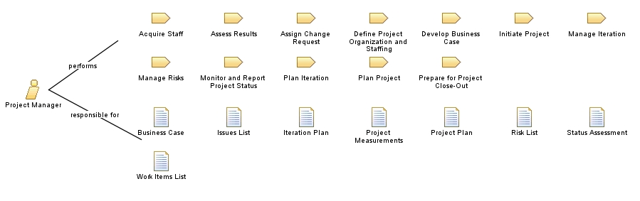

|
Relationships
 |
| Primary Performs |
|
| Additionally Performs |
|
| Modifies |
|
Main Description
The person in this role:
-
Coaches the team to drive a successful outcome of the project and the acceptance of the product by the customer
-
Is accountable for the outcome of the project and the acceptance of the product by the customer
-
Is responsible for the evaluation of project's risks and for controlling those risks through mitigation strategies
-
Applies management knowledge, skills, tools, and techniques to a broad range of tasks to deliver the
desired result for a particular project in a timely manner
|
Staffing
| Skills |
A person performing this role needs the following skills:
-
Leadership and team-building capabilities
-
Thorough experience in the software development lifecycle to coach, guide, and support other team members
-
Proficiency in conflict resolution and problem-solving techniques
-
Good skills in presentation, facilitation, communication, and negotiation
|
| Assignment Approaches |
This role is often played by a single person. It is difficult to have this role shared by multiple people, but it might
not use all of a person's available time.
|
Key Considerations
| In the context of portfolio management, this role participates in the decision of how to allocate resources supply
to work on portfolio components demand. |
This program and the accompanying materials are made available under the
Eclipse Public License V1.0, which
accompanies this distribution.
EPF Copyright.
Licensed Materials - Property of IBM
© Copyright IBM Corp. 1987, 2011. All Rights Reserved.
|
|